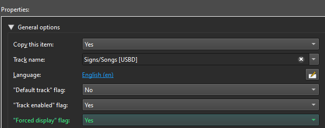
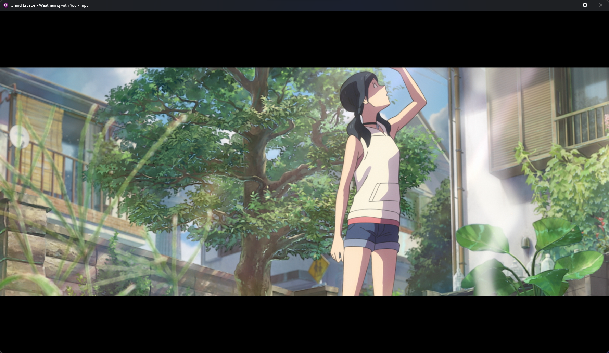

#
Muxing
Matroska is a very versatile container. Matroska is usually found as .mkv files (Matroska video), .mka files (Matroska audio), .mks files (subtitles). It can contain multiple streams of video, audio, subtitles, and other attachments. The process of taking these streams, adding or removing some, and bundling them into a new file is called muxing or multiplexing. Muxing is a lossless process and takes only a few seconds. In general, you could be muxing any format, but for anime we'll mostly be dealing with mkv. It's useful when you want to use subtitles from a different release with what you already have downloaded, or to remove the extra english audio tracks to save space.
#
MKVToolNix
MKVToolNix is a set of tools to create, alter and inspect Matroska & WebM files under Windows, macOS, Linux and other Unices. It is the de-facto reference implementation of a Matroska multiplexer.
MKVToolNix consists of the following command-line tools:
mkvmergeis a tool to create Matroska & WebM files from other formats.mkvinfoallows one to get information about the tracks in Matroska & WebM files.mkvextractcan extract tracks from Matroska & WebM files to other formats.mkvpropeditcan edit properties such as header and chapter information or attachments without remuxing.
On top of them sits MKVToolNix GUI, an easy-to-use program making the functionality of those command-line tools available as a GUI.
#
Getting started
After installing MKVToolNix, you're pretty much ready to go. Once you launch it, you'll be greeted with this. You'll see 3 tabs here:
Inputtab for adding your files, modifying existing tracks, adding/removing tracks and more.Outputtab for adding metadata like file title or chapters.Attachmentstab for additional attachments, commonly used for adding fonts required by the subtitle tracks and things like cover.
Screenshot 
When you first add a file in MKVToolNix, you'll get a pop to select it's behavior.
- Select
Add as new source files to the current multiplex settings - Check
Always use the action selected above and don't ask again - Click
OK
Screenshot 
- Select
Now, You can either right-click anywhere in the top "Source Files" box or drag and drop your file in it.
- Once you add your source file, all the tracks in your file will show up in the box below, along with other relevant things in each tab.
- Tracks will be randomly assigned a color to indicate what source they belong to.
- Checking or unchecking a track will decide if it'll be kept or removed in the output file.
- By default, anything you won't explicitly uncheck will be copied over to the new output file.
- Clicking on any track allows you to modify several properties in the window on the right. It's important you get this right and it's covered in more details
below .
Screenshot 
Once you're done making your changes, assign a name to your file and hit
Start multiplexing. Make sure to check all 3 tabs to ensure what's being copied over.Screenshot 
MKVToolNix also allows you to generate a commandline with all the changes you made in the GUI.
{kind=link}
#
Correct Tagging
The Properties tab allows you tag each track with various flags. Tagging a track correctly is very important and must be done correctly because proper tagging enables a player to autoselect the correct language streams for audio and subtitles. Tags can be edited in the MKVToolNix or mkvpropedit without remuxing.
- You can leave the language tag as
und. There's not much documentation about this but the official examples leave it asundand I haven't found any issues with or without the language tag on a video track. Feel free to correct me if you find otherwise. - Mark it as
Default. - Mention the name of the
Encoder/Groupor simply region likeJPNBDorITABDif it's untouched BluRay Remux.
- Mention the codec, channels, and quality in the
Namefield. - Language tag must be used appropriately reflecting the language of the audio.
- Audio tracks must not be marked as
Forced. - Regular
Japaneseaudio must be tagged asjpnand marked asDefault. - Regular
Englishaudio must be tagged asengand marked asDefault. - Any and all other regular audio tracks (e.g Spanish dub, German dub, etc) must be tagged with their respective language tag and marked as
Default. - If you have multiple dialects of the same language, they must be tagged with the dialect and mentioned in the
Namefield. For example, Castilian Spanish must be tagged ases-ESwhile Latin American Spanish must be tagged ases-419. - Any and all non-Regular/Specialized tracks (e.g
commentary,descriptive audio, etc) must be tagged with their respective flags and language but must not be marked asDefault
- Language tag must be used appropriately reflecting the language of the subtitles.
- Regular subtitle tracks (i.e,
Full Subtitles) must be tagged with the appropriate language and marked asDefault. - The forced track (i.e,
Signs/Songs) must be tagged with the appropriate language and marked asForced. This track should not be marked asDefaultbecause it is not a "regular" track; instead, it is a specialized one meant to be used with dubs. The language tag must be identical to the language tag of the audio track it is intended to be used with. - There should only be one
Forcedtrack per language. Honorificstrack must be tagged asenmandDefaultbut notForced. Note: This isn't a Matroska standard but a widely accepted convention in the anime community. Commercial software like Plex also support this convention.- If you have multiple dialects of the same language, they must be tagged with the dialect and mentioned in the
Namefield. For example, Castilian Spanish must be tagged ases-ESwhile Latin American Spanish must be tagged ases-419. - Any and all non-regular/specialized tracks (e.g
commentary,SDH, etc) must be tagged with their respective flags and language but must not be marked asDefault.
- The track order also plays an important part in the automatic selection of tracks.
- Tracks should be grouped by language, with the regular track being the first within its language group.
- Recommended track order is:
- Video
- Original audio group
- Original regular audio
- Original Specialized audio (commentary, descriptive, etc)
- Dub audio group
- Regular dub audio
- Specialized dub audio (commentary, descriptive, etc)
- Subtitle group related to Original audio
- Regular subtitle tracks for regular original audio
- Specialized subtitle track for audio tracks in the original audio group
- Subtitle group related to dub audio
- Regular subtitle tracks for the regular dub audio
- Specialized subtitle track for audio tracks in the dub audio group (forced, commentary, sdh, etc)
- When you have two regular tracks of the same language, let's say a
Japanese 2.0track and aJapanese 5.1track, and you have correctly tagged them, you'll notice that these end up being tagged identically. In this case, players will fall back to using track order to select the audio track. Now, it's pretty much up to your personal preference as to which one goes first and ends up being the real default for the end user.
Refer to the
#
Related Info

This flag DOES NOT mean that a subtitle track will be permanently on the screen, which is a common misconception. Forced subtitles only provide subtitles when the characters speak a foreign or alien language, or a sign, flag, or other text in a scene is not translated in the localization and dubbing process. In our case, it's supposed to be displayed whenever the English dub has untranslated things like Japanese Signs and Songs like Opening/Ending or Inserts.

This flag DOES NOT mean that a track is going to be the default choice upon playback, instead it's a hint for the player indicating that a given track SHOULD be eligible to be automatically selected as the default track for a given language. If no tracks in a given language have the default track flag set, then all tracks in that language are eligible for automatic selection. This can be used to indicate that a track provides “regular service” suitable for users with default settings, as opposed to specialized services, such as commentary, hearing-impaired captions, or descriptive audio.
The latest version of each player was tested on 2024-01-09
Everything I've covered in this section is a simplified version of the full spec, which you can read here if you want to.
#
Fonts
{kind=link}
Fonts used by the .ass subtitles must be attached to the .mkv file for displaying subtitles accurately on the user's end. This can be easily done by dragging the fonts used by the .ass file into the attachments tab. You can usually source the correct fonts from the same fansub release you got the subtitles from. Alternatively, dropping the original fansub release in MKVToolNix will automatically carry over all the fonts in it. You can also get the fonts used by the .ass file with Aegisub or FontCollector if you have them on your system already.
#
MKV Cropping
MKVToolNix allows you to set crop values for the video stream. This is quite helpful for cropping black bars without re-encoding. Players that support MKV crop values, such as mpv, will display the video as intended (without black bars), while players that do not support these values will continue to play it normally (with black bars) without any adverse effects.
Advantages of cropping and why you should do it:
- Cropping black bars allows the video to fill the entire screen. A couple of common examples would be letterboxed content on ultrawide displays or pillarboxed content on 4:3 displays, where black bars would otherwise prevent the video from filling the entire screen
- On 16:9 displays where cropping would result in black bars regardless, it's still beneficial because it avoids dirty lines caused by scaling
You must check that the aspect ratio is consistent throughout the entire file and only crop the smallest value. It's possible that the video might switch aspect ratio during its runtime, in which case a careless crop can result in the unintended removal of content. Thoroughly check for such changes before making any adjustments.
#
Two ways to crop
- Click on the video stream in MKVToolNix GUI
- Go to the
Propertiestab on the right, and then navigate to theVideo Properties - Enter your crop values in the format
LEFT, TOP, RIGHT, BOTTOM, i.e,0,180,0,180to crop180pixels from top and bottom.
{kind=link}
- Open
Header Editorin the left pane - Add your file
- Naviage to the Video track's properties
- Adjust them as needed and then press
CTRL+Sto save without remuxing the file

Uncropped 
MKV Cropped

#
Container Delays

MKVToolNix allows you to set positive or negative delays on each track in order to synchronize them with the designated video track. This is usually the easiest way to sync different tracks together, but you should be careful with it. Avoid delays exceeding 1001ms, as they may lead to playback problems on different media players. Instead, consider syncing each track using their specific tools and only utilize container delays for smaller adjustments as a final resort.
The only exception to this is TrueHD audio, where container delay is your only option. Multi-channel TrueHD streams contain alternative presentations (downmixes): 2.0, 5.1 and 7.1. These are embeded either as discrete channels or derived through custom coefficients.
These alternative presentations are lost once decoded, even if they were to be encoded/transcoded back to TrueHD.
#
QoL stuff
This is commonly seen in WEB-DL releases.
The --add-track-statistics-tags option calculates statistics for all tracks in a file and adds new statistics tags for them. If the file already contains such tags then they'll be updated. The other options are pretty self-explanatory.
mkvpropedit "file.mkv" --tags all: --add-track-statistics-tags --edit info --delete date --set muxing-application="" --set writing-application=""for %X IN (*.mkv) do mkvpropedit "%X" --tags all: --add-track-statistics-tags --edit info --delete date --set muxing-application="" --set writing-application=""for file in *.mkv; do mkvpropedit "$file" --tags all: --add-track-statistics-tags --edit info --delete date --set muxing-application="" --set writing-application=""; donemkv file without remuxing
This is an example, you'll have to edit the command further to apply to your specific file
for %X in (*.mkv) do mkvpropedit "%X" --add-track-statistics-tags --edit info --delete title ^
--edit track:v1 --set name="Encode Group" --set language=jpn --set flag-default=1 ^
--edit track:a1 --set name="FLAC 2.0" --set language=jpn --set flag-default=1 ^
--edit track:a2 --set name="Opus 5.1 @ 320kb/s" --set language=eng --set flag-default=1 ^
--edit track:s1 --set name="Full Subtitles [Fansub]" --set language=eng --set flag-default=1 --set flag-forced=0 ^
--edit track:s2 --set name="Honorifics [Fansub]" --set language=enm --set flag-default=1 --set flag-forced=0 ^
--edit track:s3 --set name="Signs/Songs [Fansub]" --set language=eng --set flag-default=0 --set flag-forced=1 ^
--edit track:s4 --set name="Full Subtitles [Official]" --set language=spa --set flag-default=1 --set flag-forced=0for file in *.mkv; do
mkvpropedit "${file}" --add-track-statistics-tags --edit info --delete title \
--edit track:v1 --set name="Encode Group" --set language=jpn --set flag-default=1 \
--edit track:a1 --set name="FLAC 2.0" --set language=jpn --set flag-default=1 \
--edit track:a2 --set name="Opus 5.1 @ 320kb/s" --set language=eng --set flag-default=1 \
--edit track:s1 --set name="Full Subtitles [Fansub]" --set language=eng --set flag-default=1 --set flag-forced=0 \
--edit track:s2 --set name="Honorifics [Fansub]" --set language=enm --set flag-default=1 --set flag-forced=0 \
--edit track:s3 --set name="Signs/Songs [Fansub]" --set language=eng --set flag-default=0 --set flag-forced=1 \
--edit track:s4 --set name="Full Subtitles [Official]" --set language=spa --set flag-default=1 --set flag-forced=0
done